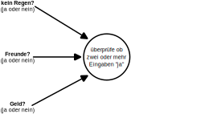

Vorlesung 2: neuronale Netze

Rückblick Vorlesung 1
- Frage: Wie können wir "künstliche Intelligenz" definieren? Was sind Beispiele für Anwendungen?
Antwort: Methoden die es Maschinen ermöglichen, ihr Umfeld wahrzunehmen und Lernen und Intelligenz zu verwenden um Aktionen zu setzen um ein definiertes Ziel zu erreichen. Beispiele sind: handgeschriebene Zahlen erkennen, Text generieren, Inhalte auswählen, ... - Frage: Was ist "Klassifizierung"? Wie funktioniert die "Pipeline" für überwachtes Lernen?
Antwort: Klassifizierung weist einer Beobachtung (Datenpunkt) eine Klasse zu, z.B. eine von 10 möglichen Ziffern. Um einen Algorithmus des überwachten Lernens für Klassifizierung zu trainieren, brauchen wir Beispielbeobachtungen mit richtigen Klassenlabels. - Frage: Wie funktioniert ein Entscheidungsbaum?
Antwort: Attribute von Beobachtungen sind Knoten des Entscheidungsbaums, Kanten sind Bereiche von Attributwerten, "Blätter" sind Klassenlabel. Zur Klassifizierung einer Beobachtung durchlaufen wir den Entscheidungsbaum von oben nach unten und biegen an jedem Knoten rechts oder links ab, je nach Attributwert der Beobachtung.
Überblick über die heutige Vorlesung
- Neuronale Netze
- Performance von Algorithmen
- Underfitting, overfitting, Bias, Varianz
- Datentypen & Datenprobleme
- Regression
3Blue1Brown videos: What is a neural network?, Gradient Descent, Backpropagation.
A guide to performance metrics in machine learning
Statquest machine learning fundamentals: Bias and Variance
Machine Learning Mastery: Regression Metrics
[Weiterführende Inhalte]
Lernziele
- Verstehen wie ein neuronales Netz funktioniert.
- Die Performance von einem machine learning Algorithmus messen.
- Verstehen wie man underfitting und overfitting beim Training vermeidet.
- Einen Übberblick über verschiedene Datentypen und mögliche Datenprobleme haben.
Neuronale Netze
- Ein Algorithmus für maschinelles Lernen zur Klassifizierung:
- Nimmt die Attribute xi einer unbekannten Beobachtung als Eingabe (Input)
- Sagt die Klasse yi der Beobachtung voraus (Ausgabe, Output).
- Lernt aus Trainingsdaten um seine Performance zu steigern.
- Letzte Vorlesung: verschiedene Algorithmen für Klassifizierung:
- Naive Bayes
- k nächste Nachbarn
- Entscheidungsbäume
- Jetzt: neuronale Netze als mächtige und flexible Architektur für Algorithmen des maschinellen Lernens.
Das Perzeptron
Inspiriert von: YouTube Science Buddies Super Simple Neural Network Explanation.
Soll ich heute Abend ausgehen?
- Eingaben:
- Regnet es draußen?
- Gehen meine Freunde aus?
- Habe ich Geld übrig?
- Ausgabe: Ausgehen? (ja oder nein)
- Einfacher Algorithmus: Wenn zwei oder mehr Eingaben "ja", gehe ich aus.


Inspiriert von: YouTube Science Buddies Super Simple Neural Network Explanation.
Neuronales Netz zur Bilderkennung
Zusammenfassung
- Neuronale Netze bestehen aus einzelnen Neuronen (Perzeptronen).
- Einzelne Neurone erhalten Eingaben und errechnen mit Hilfe einer Aktivierungsfunktion eine Ausgabe.
- Ausgaben werden an Neurone in der nächsten Schicht (layer) des neuronalen Netzes weitergegeben bis die Ausgabeschicht (ouptut layer) erreicht ist.
- Die Eingabeschicht (input layer) erhält die Attribute einer Beobachtung xi als Eingabe. Die Ausgabeschicht (output layer) gibt eine der möglichen Klassen yi aus.
- Die Wichtigkeit von Eingaben kann über Gewichte modifiziert werden.
- Beim Training von neuronalen Netzen werden die Gewichte angepasst, bis die Ausgabe optimal ist.